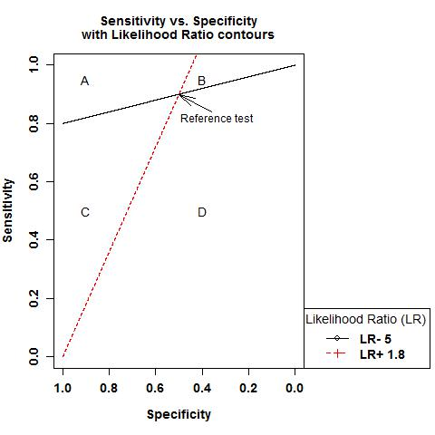

This toolset estimates risk stratification from early biomarker data and stategies to advance biomarkers or other
risk measures indentified case-control studies to clinical or public health applications. The toolset will show
quantities for which people's intuition is poor, such as need for a single marker of a rare disease to improve management
by some serious intervention. The toolset hopless pursuit, wasteful, unethical clinical testing begins. Thus, using
these strategies will allow focusing on the most promising markers early on, making specific improvements if required,
or abandoning markers that are most likely to fail.
This tool plots contours of likelihood ratio positive (LR+) and
likelihood ratio negative (LR-) for a reference test with indicated
sensitivity and specificity pairs (see the example plot below). The
likelihood ratio contours define four areas:

Area A shows combinations of
sensitivity and specificity with higher LR+ and LR- than the
reference test. This corresponds to a higher positive predictive
value (PPV) and lower complement of the negative predictive value
(cNPV)
Area B shows combinations of
sensitivity and specificity with higher LR+ and lower LR- than
the reference test. This corresponds to a higher positive
predictive value (PPV) and higher complement of the negative
predictive value (cNPV).
Area C shows combinations of sensitivity and specificity
with lower LR+ and higher LR- compared to the reference
test. This corresponds to a lower positive
predictive value (PPV) and lower complement of the
negative predictive value (cNPV).
Area D shows combinations of sensitivity and
specificity with lower LR+ and lower LR- compared
to the reference test. This corresponds to a lower positive
predictive value (PPV) and higher complement of the negative
predictive value (cNPV)
LR+ and LR- measures provide test-specific characteristics of risk
stratification that yield estimates of absolute risk (PPV and NPV)
when multiplied with the specific disease prevalence. LR+ and LR-
estimated in one population will be the same in another
population, whenever sensitivities and specificities are the same
in the 2 populations, even when disease prevalences are much
different. To calculate PPV and cNPV, provide a prevalence value.
Input Information
Manually enter parameters
OR import values from file
#
Reference
Sensitivity
Specificity
1
0.8
0.7
2
0.85
0.68
3
0.9
0.5
(hover over or click image to expand)
Calculating
References:
Marina V. Kondratovich, (2007),
Comparing Two Medical Tests
When Results of Reference Standard Are Unavailable for Those
Negative via Both Tests, Journal of Biopharmaceutical Statistics, 18:1, 145-166,DOI: 10.1080/10543400701668308
Maximum possible MRS for a disease with this prevalence
Population Burden Stratification (PBS) = a-b
Number Needed to Recruit (NNR) = 1/PBS
Number Needed to Screen (NNS) =1/RD
Parameters
(Biomarker Title Placeholder)
(Biomarker Title Placeholder)
(Biomarker Title Placeholder)
True Positive Fraction = a
False Negative Fraction = b
False Positive Fraction = c
True Negative Fraction = d
Marker Positivity
Disease Prevalence
Positive Predictive Value (PPV)
Complement of Negative Predictive Value (cNPV)
Sensitivity
Specificity
Complement of Specificity (cSpec)
Relative Risk
Risk Difference (RD)
Youden's Index (YI)
AUC = (1+YI)/2
Help
Tools Help
Means to Risk
Biomarker Comparison
Risk Stratification Advanced Analysis
Instructions for Input This tool calculates values and creates a graph for valid combinations of given PPV, cNPV,
delta, specificity, sensitivity, and prevalence values. Click on the 'Example' link
for an example input combination.
Choose which values you would like to input as the
independent variable, or for the x-axis of the output graph, from
the drop-down menu next to 'Independent Variable'. Then enter your
values as decimals separated by commas.
Choose which values you would like to input as the contours
of the output graph from the drop-down menu next to 'Contour'. Then
enter your values as decimals separated by commas.
Choose which values you would like to input as fixed
values. Then enter your values as decimals separated by commas.
Click 'Calculate'
Input Validation Rules
Specificity, Sensitivity, PPV, cNPV, and Prevalence can only be 0 to 1
Delta can be 0 to 5
cNPV < Prevalence
For arrays: max(cNPV) < min(Prevalence)
Prevalence < PPV
For arrays: max(prev) < min(PPV)
Sensitivity+Specificity-1 > 0
PPV and cNPV; Sensitivity, Specificity, and Delta; PPV,
Prevalence, and Delta; and cNPV, Prevalence, and Delta are invalid combinations of input
Power and Sample Size Calculation
Mean Risk Stratification
FAQ
Where do I go for technical support?
Please send ane-mail to our technical support team.
What browsers does the web tool support?
The web tools have been tested to work with Internet Explorer 10, Firefox and Chrome.
These tools do not support Internet Explorer 9 and below.

 (hover over or click image to expand)
(hover over or click image to expand)